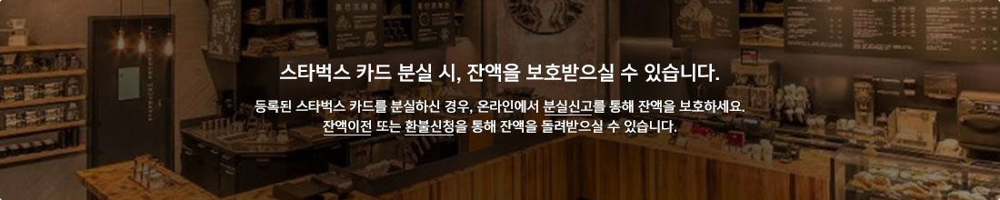

메인
Sign In
My Starbucks
Customer Service & Ideas
Find a Store
COFFEE
MENU
STORE
RESPONSIBILITY
STARBUCKS REWARDS
WHAT'S NEW
Starbucks Rewards
스타벅스 카드
분실신고 / 환불신청

등록해지
분실신고
환불신청
고장신고
잔액조회
정의
등록된 스타벅스 카드를
My
카드
목록에서 삭제
진행 방법
온라인(홈페이지, 모바일 애플리케이션)에서 직접 조작
유의사항
미등록 카드와 동일하게 매장에서 사용이 가능하나, 카드사용에 대한 리워드 혜택이 제공되지 않음
등록해지 카드는 언제든지 기존 등록자 및 타 사용자가 재등록하여 사용가능
- 재등록이전의 이용내역 조회불가
-
Gold
카드는 본인 외 타사용자 재등록불가